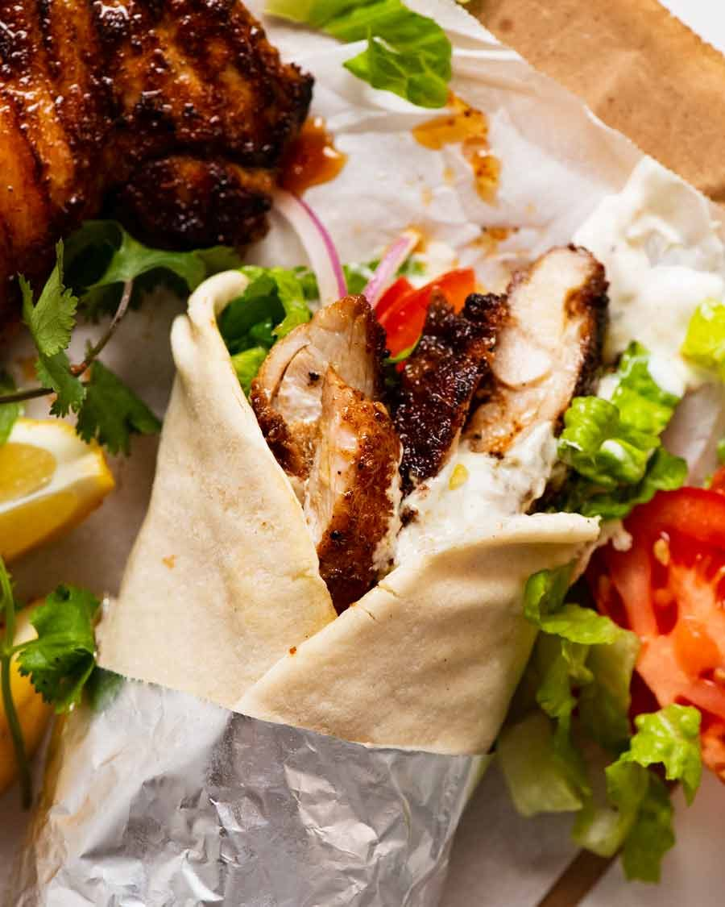

Chicken Shawarma

Description
A close relative to Greek gyros and Turkish döner kebab, shawarma is the ultimate Middle-Eastern version of street food popular both across Lebanon, as well as in other Arabic countries and across the world. Although it may seem simple at first glance, it actually takes up to 2 days to prepare the original Lebanese shawarma.
Ingredients
- FOR THE SHAWARMA
- 1 kg (2.2 lbs) beef or mutton
- 4 cloves garlic, mashed
- 1/4 cup olive oil
- 1/3 cup (80 ml) vinegar
- 1 tbsp shawarma seasoning blend
- 1 tbsp dry coriander, ground
- 1/2 tsp cinnamon
- 1/2 tsp turmeric
- ¼ tsp black pepper
- 1 tbsp salt, adjust to taste
- 1 medium-sized tomato, sliced or diced
- 1/2 green pepper, cut into strips
- 1 large onion
- 4 tbsp sumac
- 1 cup (30g) chopped parsley
- Pickles, sliced
- Pita bread
- FOR THE SAUCE
- 1 cup (240g) tahini
- 3 tbsp yogurt
- 1/4 cup (60 ml) lemon juice
- 2 tbsp vinegar
- 1 tsp salt
- 1/2 tsp crushed cumin
Steps
- Cut the meat into long, thin strips. Prepare the marinade by mixing garlic, oil, vinegar, shawarma seasoning blend, coriander, black pepper, turmeric, cinnamon, and salt. Rub the marinade into the meat, cover, and refrigerate overnight or at least for several hours.
- In the meantime, prepare the sauce. Mix all the ingredients until the mixture becomes homogenous. If the sauce is too thick, add some more lemon juice.
- Cook the meat in a pan over strong flame until the marinade evaporates. Then, pour in 1 cup (240 ml) of water and continue cooking until the meat is soft. Add tomato and pepper slices and stir until they fall apart. Set aside.
- Spread the sauce over the pita bread. Top with sliced onion, pickles, sumac, and parsley, and finish with shawarma. Roll and serve.
Home